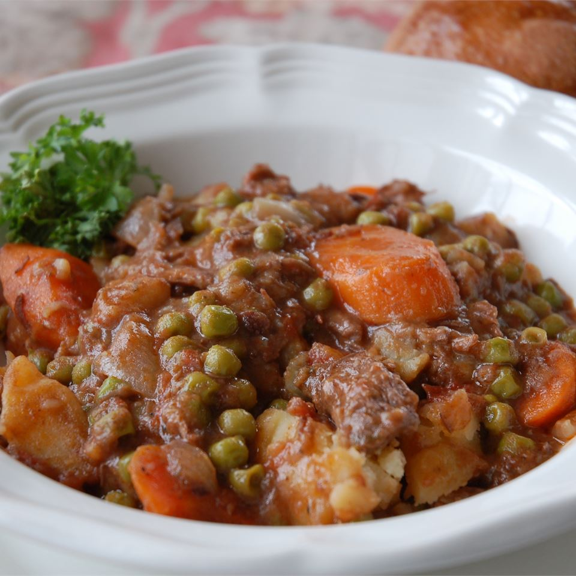

Cowboy Beef Stew
Ingredients
- 3 pounds beef stew meat, cut into 1 inch cubes
- 2 teaspoons salt, divided
- 1 teaspoon ground black pepper, divided
- ¼ cup all-purpose flour
- ¼ cup butter
- 1 tablespoon vegetable oil
- 1 onion, chopped
- 1 (8 ounce) can whole peeled tomatoes
- 3 cups water
- 2 cubes beef bouillon
- 2 cloves garlic, minced
- 2 tablespoons chopped parsley
- ⅛ teaspoon dried thyme
- 1 cup red wine
- 6 carrots, chopped
- 6 stalks celery, chopped
- 6 potatoes, cubed
- 2 cups pearl onions
Directions
- Season the stew meat with some of the salt and pepper and coat with flour. In a large skillet over medium-high heat, Sautee the beef and onions in the butter and oil until browned on the outside. Transfer the beef and onions to a stockpot and stir in the tomatoes, water and bouillon cubes. Season with garlic, parsley, thyme and remaining salt and pepper. Stir in the red wine.
- Cover soup and simmer for 1 1/2 hours before adding carrots, celery potatoes and pearl onions. Continue to simmer until potatoes are tender, about 1 hour.